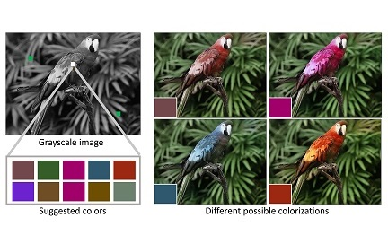

Publications

Deep Reinforcement Learning for Tensegrity Robot Locomotion
Marvin Zhang*, Xinyang Geng*, Jonathan Bruce*, Ken Caluwaerts, Massimo Vespignani, Vytas SunSpiral, Pieter Abbeel, Sergey Levine
In ICRA, 2017.
Also, in NIPS Deep Reinforcement Learning Workshop, 2016.
We collaborated with NASA Ames to explore the challenges associated with learning locomotion strategies for tensegrity robots, a class of compliant robots that hold promise for future planetary exploration missions. We devised a novel extension of mirror descent guided policy search to learn locomotion gaits for the SUPERball tensegrity robot, both in simulationand on the physical robot.

Real-Time User-Guided Image Colorization with Learned Deep Priors
Richard Zhang*, Jun-Yan Zhu*, Phillip Isola, Xinyang Geng, Angela S. Lin, Tianhe Yu, Alexei A. Efros
In SIGGRAPH 2017.
We propose a deep learning approach for user-guided image colorization. We system directly maps a grayscale image, along with sparse, local user “hints” to an output colorization with a deep convolutional neural network.